항공무선통신사 (2014-03-09 기출문제)
1과목: 전파법규
1. 다음은 ICAO의 항공이동업무에 관한 사항이다. 괄호 안에 들어갈 알맞은 것은?
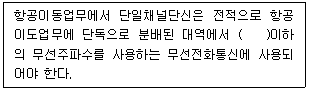
- 20[MHz]
- 30[MHz]
- 40[MHz]
- 50[MHz]
(정답률: 67%)

2. 전파형식의 등급표시에 있어 기본 특성의 셋째 기호(송신할 정보형태) 중 '전화'를 나타내는 문자는?
- A
- C
- E
- F
(정답률: 83%)
3. 시설자가 미래창조과학부장관에게 신고하고 무선국의 운용을 휴지할 수 있는 기간은?
- 1개월이상 1년이내
- 2개월이상 1년이내
- 3개월이상 1년이내
- 6개월이상 1년이내
(정답률: 76%)
4. 다음 중 항공이동업무의 무선국을 위한 조난 및 긴급통신을 목적으로 이용하는 무선전화용 주파수는?(오류 신고가 접수된 문제입니다. 반드시 정답과 해설을 확인하시기 바랍니다.)
- 156.8[MHz]
- 121.5[MHz]
- 243[MHz]
- 500[KHz]
(정답률: 49%)
5. 항공국이 운용을 종료하고자 할 떄의 제한사항으로 옳지 않은 것은?
- 통신이 가능한 범위 안에 있는 모든 항공기국에 대하여 그 뜻을 통지하여한 한다.
- 정시외의 시각에 다시 운용을 종료하고자 하는 때에는 그 예정시각도 통지하여야 한다.
- 항공국이 운용종료 통지결과 항공기국으로부터 운용시간 연장을 요구할 경우에는 그 요구된 시간까지 운용하여야 한다.
- 통신을 행하였던 항공기국에 대해서만 그 뜻을 통지하여야 한다.
(정답률: 84%)
6. 의무항공기국의 무선설비 성능유지를 확인하야 하는 주기로 옳은 것은?
- 500시간 사용할 때마다 1회 이상 확인
- 1,000시간 사용할 때마다 1회 이상 확인
- 1,500시간 사용할 때마다 1회 이상 확인
- 2,000시간 사용할 때마다 1회 이상 확인
(정답률: 90%)
7. 다음은 항공무선통신사가 행할 수 있는 무선설비 외부조정의 기술운용 범위를 나타낸 말이다. 괄호 안에 들어갈 적당한 말은?
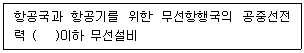
- 50와트
- 100와트
- 200와트
- 250와트
(정답률: 69%)
8. 항공기국 무선설비의 일반조건을 설명한 것 중 옳지 않은 것은?
- 작고 가벼우며, 취급이 용이할 것
- 무선실비 동작안전을 위하여 온도 및 습도에 예민하게 반응할 것
- 수신설비는 가능한 한 항공기의 전기적 잡음에 의한 방해를 받지 아니할 것
- 공중선계는 풍압과 빙결에 견딜 것
(정답률: 87%)
9. 항공기국과 통신하기 위하여 육상에 개설하고 이동하지 않는 무선국은?
- 항공고정국
- 항공국
- 기지국
- 해안국
(정답률: 56%)
10. 다음 중 전파법에서 규정한 용어의 설명으로 옳지 않은 것은?
- '무선국'은 무선통신을 위하여 허가 받은 무선기기를 말한다.
- '송신설비'는 전파를 보내는 설비로서 송신장치와 송신공중선계로 구성되는 설비를 말한다.
- '수신설비'는 전파를 받는 설비로서 수신장치와 수신공중선계로 구성되는 설비를 말한다.
- '무선설비'는 전파를 보내거나 받는 전기적 시설을 말한다.
(정답률: 77%)
11. 다음 중 무선설비의 효율적 이용을 위하여 미래창조과학부장관의 승인을 얻어 위탁운용 또는 공동사용할 수 있는 무선설비가 아닌 것은?
- 무선국의 공중선주
- 송신설비
- 무선국의 성능측정 설비
- 수신설비
(정답률: 83%)
12. 의무항공기국이 운용의무시간 중에 청취하여야 할 전파형식은?
- J3E
- F3E
- A3E
- E3E
(정답률: 86%)
13. 선박, 항공기 또는 기타 이동체의안전, 선상 또는 시계 내에 있는 인명의 안전에 관련되 긴급 전문의 우선순위 약어는?
- SS
- DD
- FF
- GG
(정답률: 51%)
14. 항공기국이 항공국에 무선전화에 의한 시험통신을 행하고 이에 항공국이 시험통신에 응하는 경우 올바른 송신 순서는?
- 상대항공기국의 호출명칭-여기는-자국의호출명칭-명료도-이상
- 상대항공기국의 호출명칭-여기는-자국의호출명칭-이상-명료도
- 자국의호출명칭-여기는-상대항공기국의 호출명칭-이상-명료도
- 자국의호출명칭-여기는-상대항공기국의 호출명칭-명료도-이상
(정답률: 84%)
15. 무선국의 검사를 거부하거나 방해한 자에 대한 벌칙은?(관련 규정 개정전 문제로 여기서는 기존 정답인 1번을 누르면 정답 처리됩니다. 자세한 내용은 해설을 참고하세요.)
- 1년 이하의 징역 또는 500만원 이하의 벌금
- 1년 이하의 징역 또는 300만원 이하의 벌금
- 500만원 이하의 과태료
- 300만원 이하의 과태료
(정답률: 65%)
16. 주파수할당을 받은 자가 주파수이용기간이 만료되어 주파수재할당을 받으려면 주파수이용기간 만료 몇 개월전에 신청하여야 하는가?
- 1개월
- 2개월
- 6개월
- 8개월
(정답률: 73%)
17. 다음 중 무선국 검사 시 허가 또는 신고사항 등과 일치하는지 여부를 확인하는 대조검사 항목에 포함되지 않는 것은?
- 시설자
- 설치장소
- 무선종사자 배치
- 공중선 전력
(정답률: 62%)
18. 의무항공기국의 무선실비로서 A3E 전파 118[MHz]부터 136.975[MHz]까지 주파수대의 전파를 사용하는 송신설비의 유효통달거리는 최소 얼마 이상이어야 하는가? (단, 비행고도 300미터 일 때)
- 50[Km] 이상
- 60[Km] 이상
- 70[Km] 이상
- 80[Km] 이상
(정답률: 76%)
19. 무선국을 개설하고자 하는 자는 누구에게 허가를 얻어야 하는가?
- 산업통산자원부장관
- 과학기술통신부장관
- 국립전파연구원장
- 국토교통부장관
(정답률: 68%)
20. 업무종사의 정지를 당한 후 그 기간에 무선설비를 운용한 경우 벌칙은?
- 200만원 이하의 벌금
- 200만원 이하의 과태료
- 2년 이하의 징역 또는 2,000만원 이하의 벌금
- 2년 이하의 징역
(정답률: 67%)
2과목: 기초전파공학
21. 다음 중 공중선과 전송선로 사이의 임피던스 부정합 상태를 해결하는 방법이 아닌 것은?
- 안테나의 길이를 조정한다.
- 전송선로의 길이를 조정한다.
- 발룬(Balun)을 사용한다.
- L(리액턴스),C(캐피시던스) 정합회로를 사용한다.
(정답률: 40%)
22. 다음 중 급전선의 필요조건으로 잘못된 것은?
- 전송효율이 좋을 것
- 급전선의 파동임피던스가 클 것
- 유도방해를 주거나 받지 않을 것
- 송신용의 경우 절연내력이 클 것
(정답률: 49%)
23. 정격출력 25[W]의 송신기 출력을 측정하였더니 진행파 24.5[W], 반사파 1.25[W] 였다면 실제 공중선에 공급되는 출력은 얼마인가? (단, 급전선 케이블 손실 등은 0[dB]라고 가정한다.)
- 23.25[W]
- 24.50[W]
- 25.00[W]
- 25.75[W]
(정답률: 53%)
24. 비오사바르의 법칙은 어떤 관계를 나타낸 것인가?
- 기전력과 자속의 변화
- 전위와 자기장의 세기
- 전류와 자기장의 세기
- 기전력과 회전수
(정답률: 52%)
25. 다음 중 정류기의 평활 회로에 사용되지 않는 것은?
- 콘덴서
- 다이오드
- 초크 코일
- 저항
(정답률: 42%)
26. 1[kHz] 신호파에 916[kHz] 반송파를 진폭변조(AM)할 때, 피변조파에 포함되어 있지 않은 주파수는?
- 1[kHz]
- 915[kHz]
- 916[kHz]
- 917[kHz]
(정답률: 58%)
27. 다음 중 위성통신용 주파수대의 일반 분류 명칭과 주파수 범위가 잘못 연결된 것은?
- L밴드 : 1 ~ 2[GHz]
- S밴드 : 4 ~ 8[GHz]
- X밴드 : 8 ~ 12.5[GHz]
- K밴드 : 18 ~ 26.5[GHz]
(정답률: 49%)
28. SSR(Secondary Surveillance Radar)에 관한 설명으로 잘못된 것은?
- 방위는 알 수 있지만 거리는 알 수 없다.
- 레이더 화면에 항공기 추가정보 표시를 가능하게 한다.
- 질문기와 응답기로 구성된다.
- 항공기측에서 고도 또는 항공기 식별 코드를 응답할 수 있다.
(정답률: 68%)
29. 다음 설비 중 무선항법시스템이 아닌 것은?
- NDB
- DME
- VOR
- SSR
(정답률: 64%)
30. 무선송신기 최종단에서 스피커나 기타 큰 부하를 구동하는 증폭기는 무엇인가?
- 전압 증폭기
- 전류 증폭기
- 저항 증폭기
- 전력 증폭기
(정답률: 42%)
31. AM 송신기의 변조신호를 오실로스코프로 측정하였더니 다음과 같이 나왔다면 변조율은 몇 [%]인가? (단, 진폭의 (Vmax)=12[V]이고, 진폭의 최소값(Vmin)=0.5[V]이다.)
- 88[%]
- 92[%]
- 96[%]
- 100[%]
(정답률: 41%)
32. 항공기내 인터넷 서비스 시스템 중 기내에서 무선LAN 접속 시 IEEE 802.11n을 지원하지 않는 네트워크 인터페이스 기술기준은?
- IEEE 802.11n
- IEEE 802.11a
- IEEE 802.11g
- IEEE 802.11k
(정답률: 62%)
33. 송신기 출력 10[W] 신호의 스퓨리어스발사 성분을 스펙트럼분석기로 측정하였더니 절대값이 –20[dBm]으로 측정되었다. 송신기 출력 기준 스퓨리어스발사 성분의 상대값은 얼마인가?
- –40[dB]
- –60[dB]
- –80[dB]
- –100[dB]
(정답률: 40%)
34. 초단파 전파를 발사하여 활주로에 접근하는 항공기에게 진입로에 대한 수평유도정보를 제공해주는 ILS 시설은?
- VOR
- Glide path
- Outer marker
- Localizer
(정답률: 61%)
35. 다음 중 전리력선(Line of Electric Force)에 대한 설명으로 옳은 것은?
- 음전하의 표면에서 나와서 양전하의 표면에서 끝난다.
- 전기력선은 도체의 표면에 수평으로 출입한다.
- 전기력선은 서로 교차하는 성질이 있다.
- 전기력석의 말도는 전기장의 세기를 나타낸다.
(정답률: 40%)
36. 전리층 반사를 이용하는 장거리 통신에 가장 적합한 안테나는?
- 장파용 안테나
- 중파용 안테나
- 단파용 안테나
- 마이크로파용 안테나
(정답률: 57%)
37. 접근관제 레이더(ASR)의 현시장치에는 몇 초 이내에 새로운 자료를 나타낼 수 있어야 하는가?
- 1초
- 2초
- 4초
- 6초
(정답률: 47%)
38. 어떤 수직접지 안테나의 복사저항이 10[Ω]이고 접지저항이 6[Ω]일 때 100[W]의 전력을 공급하면 안테나에 흐르는 전류는?
- 2.5[A]
- 10[A]
- 25[A]
- 1,400[A]
(정답률: 45%)
39. 다음 기호 중 AND 게이트에 해당하는 것은?
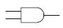
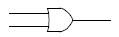
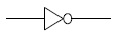
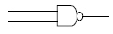
(정답률: 53%)
40. 다음은 어떤 법칙에 대한 설명인가?
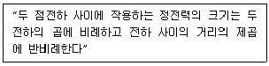
- 줄의 법칙
- 옵의 법칙
- 쿨롱의 법칙
- 암페어의 법칙
(정답률: 59%)
3과목: 통신보안
41. 다음 중 통신보안상 국가외교비밀 누설에 해당되는 것은?
- 특수임무를 수행하는 외국 주재원의 활동 및 인적사항
- 대공 및 중요사건과 관련된 검문, 검색계획 및 집행
- 반국가적 행위의 수행을 목적으로 하는 통신내용
- 국가시책에 영향을 초해는 사항
(정답률: 57%)
42. 통신망 구축 시 보안대책이 아닌 것은?
- 통신망 관리책임자의 보고체계 다원화
- 통신장비 수급관리 시 보안대책 수립
- 보안자재 및 보안장비의 설치운용
- 통신망 신·증설 시 통신보안대책 수립 의무화
(정답률: 66%)
43. 하나의 통신문이 아닌 많은 통신문을 종합분석함으로써 필요한 정보를 얻을 수 있는 통신정보 수집 방법은?
- 교신상황 분석
- 통신내용 분석
- 암호 분석
- 방해통신 분석
(정답률: 59%)
44. 비밀누설의 주요 요인이 아닌 것은?
- 과다한 통신소통
- 보고체계의 다원화
- 취약성 있는 통신망 이용
- 보안장비 사용
(정답률: 62%)
45. 통신정보활동은 어떤 목적을 달성하기 위한 수단인가?
- 통신정보를 보호하기 위한 활동
- 통신내용의 기밀누설을 방지
- 통신내용을 수집·분석하여 유용한 정보를 생산
- 통신내용의 수집·분석을 저지
(정답률: 65%)
46. 다음 중 상호 약정된 확인법을 사용하는 경우가 아닌 것은?
- 처음 통신을 시작할 때
- 상대통신소가 의심스러울 때
- 주파수를 변경했을 때
- 불필요한 통신을 계속할 때
(정답률: 57%)
47. 다음 중 통신보안의 목적이 아닌 것은?
- 노출된 정보의 분석 지연책 강구
- 국가기밀 누설 최소화
- 무선통신 억제
- 비밀누설가능성 사전 제거
(정답률: 60%)
48. 다음 중 송신보안의 대책으로 가장 옳은 것은?
- 비밀송신 자료를 보관용기에 비치한다.
- 보안자재 취급자를 최소한으로 제한한다.
- 모든 통신을 암호화한다.
- 불필요한 전파발사를 억제한다.
(정답률: 36%)
49. 기만통신을 당하고 있다고 느낄 때의 조치로 옳은 것은?
- 송신출력을 줄인다.
- 통신속도를 빠르게 한다.
- 통신을 중단한다.
- 송신출력을 높인다.
(정답률: 67%)
50. 다음 중 산업기밀의 유출요인이 아닌 것은?
- 주요 인력의 스카우트
- 기술협력을 통한 생산기술의 해외 유출
- 주요 기밀문서의 일원화된 관리
- 국가 핵심기술을 부정한 방법으로 해외 매각
(정답률: 54%)
4과목: 영어
51. 다음 문장의 밑줄 친 곳에 가장 적합한 것은?
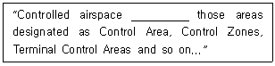
- consists with
- consists of
- is consists with
- is consist of
(정답률: 53%)
52. 다음 문장의 밑줄 친 곳에 들어갈 가장 적절한 단어는?
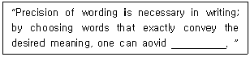
- redundancy
- ambiguity
- lucidity
- duplicity
(정답률: 70%)
53. 다음 대화의 내용 중 괄호 안에 들어갈 가장 적절한 표현은?
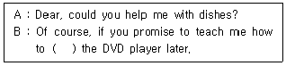
- go
- walk
- operate
- drive
(정답률: 80%)
54. 다음 설명이 나타내는 용어는 무엇인가?
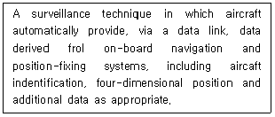
- ADS
- ATIS
- SSR
- TIS
(정답률: 55%)
55. 다음 문장이 설명하는 용어는 무엇인가?
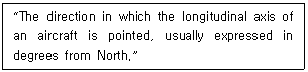
- Azimuth
- Heading
- Radial
- TIS
(정답률: 62%)
56. 다음 문장의 밑줄 친 곳에 들어갈 가장 적절한 단어는?
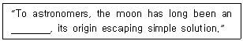
- enigma
- ultimatum
- affront
- opportunity
(정답률: 71%)
57. 항공통신교신 중 'Stay with me' 라는 말이 요구하는 뜻은?
- Hold your position
- Maintain present altitude
- Fly toward my position
- Do not change frequency
(정답률: 75%)
58. 다음 중 밑줄 친 부분에 알맞은 것은?
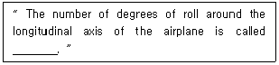
- Angle of attack
- Angle of incidence
- Angle of bank
- Pitch angle
(정답률: 62%)
59. 다음 문장이 나타내는 항공통신 용어로 적당한 것은?
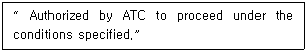
- CONTACT
- CONFIRM
- CLEARED
- CLEAR FOR TAKE-OFF
(정답률: 67%)
60. 다음의 문장이 나태내는 용어로 적합한 것은?
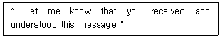
- APPROVED
- CONFIRM
- GO AHEAD
- ACKNOWLEDGE
(정답률: 74%)
61. 다음 문장의 괄호 안에 들어갈 가장 적절한 단어는?
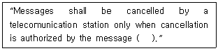
- receiver
- originator
- operator
- holder
(정답률: 57%)
62. “승무원들은 브리핑실로 들어갔다.”를 바르게 영작한 것은?
- The crew entered the briefing room.
- The crew entered in the briefing room.
- The crew entered to the briefing room.
- The crew entered into the briefing room.
(정답률: 70%)
63. 다음 문장은 어떤 용어에 대한 설명인가?
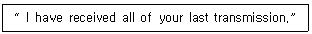
- Yes
- Affirmative
- Roger
- Go ahead
(정답률: 77%)
64. 다음 문장의 밑줄 친 부분에 알맞은 것은?
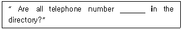
- list
- listed
- listing
- being
(정답률: 69%)
65. 다음 문장의 밑줄 친 부분에 알맞은 것은?
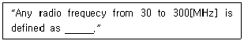
- Low Frequecy
- Medium Frequency
- High Frequency
- Very High Frequency
(정답률: 67%)
66. 항공용으로 사용되는 'NOTAM'은 무엇의 약어인가?
- Note to Airmen
- Noted information to Airmen
- Notice to Aerodrome
- Notice to Airmen
(정답률: 63%)
67. 다음 문장에서 설명하는 항공용어는 무엇인가?
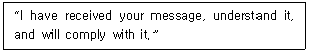
- Roger
- Roger out
- Wilco
- will do
(정답률: 73%)
68. 다음 내용이 설명하는 항공용어는 무엇인가?
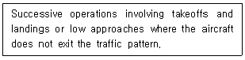
- touch and go operation
- closed traffic
- rectangular pattern
- circling maneuver
(정답률: 60%)
69. 다음 문장의 밑줄 친 곳에 들어갈 가장 알맞은 것은?
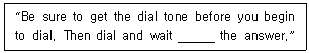
- in
- on
- for
- up
(정답률: 76%)
70. ICAO(국제민간항공기구) Doc4444에 수록된 영어 중 고도의 단위를 틀리게 서술한 것은?
- FLIGHT LEVES
- FEET
- METERS
- MILES
(정답률: 75%)